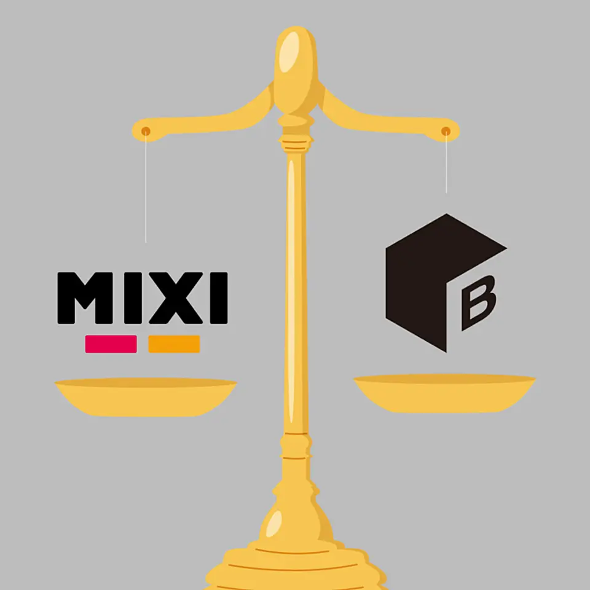
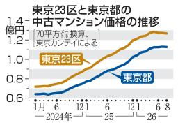

01
【ビーサイズ】私たちが、「巨人ミクシィ」を訴えた切実な理由
発行日時：2026年9月24日 05:30 JST ・ NewsPicks編集部

あなたに関係ありそうな理由
小さな会社が大企業と組む時に、NDAや特許だけでなく、交渉と資金調達をどう設計するかを考えられるためです。
概要
記事は、子ども見守りサービス「BoT」を手掛けるビーサイズが、ミクシィを相手に起こした訴訟と、その背景にある知財戦略を追う。ビーサイズは従業員五〇人未満ながら、GPS端末で子どもの行動を見守る市場で二〇二六年に四二・三％のシェアを持つとする。BoTは、利用者の普段の行動範囲をAIが学び、そこから外れた時に知らせる仕組みだ。記事によれば、二〇一九年にミクシィから協業・出資の打診を受けた際、過半の株式を求められたため同社は断った。その約一年半後に、ミクシィが類似の見守り製品を出したことが訴訟へつながったという。ただしビーサイズ自身も、当初は秘密保持契約が不十分だったことや特許があれば防げたことを主張の中心にしていなかったと振り返る。ミクシィは、関心を持って一度面談した後、二〇二一年に独自開発で市場参入したと説明し、製品は独立して開発したものだと回答している。記事で扱う特許訴訟では一件で判断が示されたものの、控訴が続いており、侵害や結論を確定的に語る段階ではない。ビーサイズは二五件の特許を取得し、特許を「縄張り」と捉えて事業を守る方針を強めた。狙いは相手を排除することだけではなく、交渉を公平にし、市場で正当に話せる土台を作ることだという。表示コメントでは、NDAや特許の有無だけでなく、出資を受ける時の議決権、共同開発の範囲、情報を渡す順番まで先に決めるべきだという意見が出た。一方で、製品を使われ続ける形にする実行力も同じく重要だという見方もある。記事が挙げる二〇二六年の市場規模は一四四億円で、事業の成長余地を見込むからこそ、面談で話した内容と自社で積み上げた技術を切り分けておく意義が増す。小規模な会社ほど、技術を見せる前に何を守り、何を交渉材料にするかを具体化しておきたい。特許を取る前後の記録も、交渉の前提として残しておきたい。出資を断った後にも相手との関係が変わり得ることを前提に、面談記録、出願の時期、次の接点のルールを残すことが、後から説明できる事業運営につながる。訴訟の結果だけでなく、協業提案の段階から意思決定の記録と知財の整理をどう積み上げるかが、次の事業機会を左右する。
仕事や会話で使える一言
「協業の前に、技術だけでなく、渡す情報と交渉条件を言葉にしておきたいですね。」
NewsPicks原文を読む
02
【速報】メタの「AI新戦略」が予想を超えてきた
発行日時：2026年9月24日 12:30 JST ・ NewsPicks編集部
あなたに関係ありそうな理由
AIが会話相手から実行役へ広がる時、便利さ、課金、購入時の確認をどう設計するかを考えられるためです。
概要
記事は、Meta Connect 2026で見えたメタの個人向けAI「Muse」の戦略を整理する。メタは数週間前に米国とカナダでMuseを出し、マーク・ザッカーバーグCEOは、人間関係、時間やお金の使い方、キャリアを助ける「個人向け超知能」と位置付けた。今回の発表で重要なのは、質問へ答えるだけでなく、本人の許可を前提にMac上のアプリを操作し、メールの処理や購入・旅行の手配へ進もうとしている点だ。Shopify、Walmart、Best Buy、Instacart、Notion、GitHub、Box、PayPal、Expediaなどとの連携も掲げ、個別サービスをまたいだ実行へ範囲を広げる。メタは月額二〇ドルと一〇〇ドルのプラン、取引手数料による収益化も想定する。音声で使える機能に加え、専用端末「Muse Charm」は価格未定のまま年末商戦期の出荷を目指すとした。カメラを持たないRay-Ban Meta Audioは米国で一〇月一三日に三四九ドルで発売予定で、日本での展開は二〇二七年を予定する。さらにメタは二〇二七年春に一二九九ドルの新しいVRグラスも出す予定で、端末、音声、Mac操作、提携先サービスを一つの関係として広げようとしている。記事は、カメラを外すことを、装着型AIのプライバシーへの一つの応答としても見る。一方、画面上での操作を代行するAIには、権限、支払額、購入条件をどの時点で本人が確かめるかという課題が残る。メタは個人の操作を隔離した仮想環境や、機密情報用の処理、録音を知らせる改ざん防止機構を説明した。過去にはMuse Imageの公開機能が批判を受け、七月一〇日に停止された経緯もある。表示コメントでは、提携先の多さが単なる会話型AIから実務を動かすAIへの転換を示すという評価があった。他方、声だけで指示できても、最終確認を省けば利用者の不利益になり得るという指摘も出た。利用者が実行履歴を後から確かめられることも必要になる。今後は機能の数より、誰のアカウントで何を実行し、どこで止められるのかを確認したい。AIの価値は代理で動ける範囲だけでなく、利用者が内容を理解して取り消せる設計にかかっている。
仕事や会話で使える一言
「AIが購入まで進むなら、速さより最終確認の分かりやすさが重要ですね。」
NewsPicks原文を読む
03
東京２３区、３カ月連続下落 ８月の中古マンション
発行日時：2026年9月24日 12:50 JST ・ 共同通信

あなたに関係ありそうな理由
平均価格の下落を、物件の構成、在庫、値下げ、成約までの日数と分けて読み解く材料になるためです。
概要
記事は、東京カンテイが発表した八月の中古マンション価格を基に、東京都心の高値圏で調整が続いていることを伝える。東京二三区の専有面積七〇平方メートル当たりの平均価格は一億二六七七万円で、前月比〇・四％下がり、三カ月連続の下落となった。東京都全体も一億一二七四万円で〇・二％低下した。二三区は二〇二五年五月まで二五カ月連続で過去最高を更新していたため、今回の数字は上昇が止まった後の変化として見る必要がある。都心六区は一億八〇六八万円で前月比〇・七％安く、四カ月連続の下落だった。記事は、価格が高止まりする一方で売れ残りが増え、都心部から都市部へ値下げが広がっているとする。ただし、平均価格だけで市場全体の下落幅や個々の物件の値動きを断定することはできない。同じ月でも、広さ、築年数、駅からの距離、成約した物件の地域が変われば平均は動くからだ。首都圏全体では七六〇六万円で前月比〇・八％上昇、前年同月比では二九・二％高く、埼玉、千葉など比較的手の届きやすい地域への需要が支えたという。愛知県は一・五％高の二四七七万円、大阪府は〇・一％高の四四四三万円、兵庫県は〇・一％安の二六四七万円だった。表示コメントでは、修繕費や管理費の上昇、積立金不足が購入判断と価格に影響し得るという現場の見方があった。また、平均の変化よりも、売却までの日数、値下げ率、在庫件数、売れた物件の内訳を追うべきだという指摘もある。為替や制度を理由に相場を説明する意見もあったが、記事本文のデータはそこまでの因果を示していない。「価格が下がった」というニュースでは、売り出し価格と成約価格の動きも同じではない。記事が示すのは七〇平方メートル換算の平均であり、購入や売却の判断には対象住戸と条件の近い実例を比べる必要がある。売り主は査定額だけでなく、売り出した後の問い合わせや内覧の反応を聞き、買い主は修繕計画と月々の負担を確認する、といった比較が欠かせない。物件を読む時は「三カ月下落」という見出しだけで売り時・買い時を決めず、希望エリアの成約単価、掲載期間、競合物件の条件を確かめたい。高値圏で何が動き、何が売れ残っているのかを分けて見ることで、平均値に振り回されずに判断できる。
仕事や会話で使える一言
「平均価格だけでなく、売却日数と値下げ率まで見ると市場の温度が分かりますね。」
NewsPicks原文を読む
04
米30年債利回りが上昇、2004年以来の高水準－世界的債券売り続く
発行日時：2026年9月24日 17:45 JST ・ Bloomberg
あなたに関係ありそうな理由
長期金利の上昇を、金融政策だけでなく、国債供給、インフレ、企業の資金需要と一緒に見られるためです。
概要
記事は、世界的な債券売りが続く中で米国三〇年債利回りが一時五・四四％へ上がり、二〇〇四年以来の高水準を付けたと伝える。利回りは価格と反対に動くため、この上昇は長期国債が売られたことを意味する。世界の国債の平均利回りも四％近くまで上がり、二〇〇七年以来の水準にあるという。背景として記事は、イラン戦争によるインフレ懸念、なお強い米国経済、各国政府の大きな資金調達、AI投資を含む企業の社債発行を挙げる。米国の五年債利回りは五％を超え、十年債利回りも四月の「解放の日」以降に大きく動いた。米国の政府債務は四〇兆ドルに達し、国債入札の弱さも投資家の警戒を促した。市場では今後一年に二五ベーシスポイントの利上げが三回織り込まれ、四回目の可能性も意識されている。日本でも一〇年国債利回りが三・〇七五％まで上昇して三〇年ぶりの高水準を付けた。記事時点で世界の国債は年初来二・四％下落している。長期金利の上昇は、住宅ローンや企業の借り入れ、株式の評価にも波及するため、債券市場だけの話ではない。利回りは満期までお金を固定することへの市場の要求水準でもある。短期金利が中央銀行の景気や物価への対応を主に映すのに対し、長期金利には将来のインフレ、財政、国債供給への見通しも混ざる。市場参加者が将来の返済能力をどう見ているかも、利回りに表れる。今回の変化は、政策金利が据え置かれていても長期の資金調達条件が緩やかになるとは限らないことを示す。ただし、利回りが高いからすぐ買い時だとも、上昇がそのまま続くとも決められない。記事は利回り上昇の途中で安易に買い向かうことへの慎重な見方も紹介する。表示コメントでは、二〇二〇年まで続いた超低金利が例外だった可能性や、財政赤字と金利上昇が互いを悪化させる循環への懸念が示された。見るべきなのは一日の上下だけではなく、入札でどの程度の需要があるか、インフレ指標がどう動くか、政府や企業の借り換え負担がどこまで増えるかだろう。金利を判断する時は、中央銀行の一言だけでなく、国債を誰がどの条件で引き受けるのかまで確認したい。資産価格への影響を考えるなら、短期金利と長期金利がそれぞれ何を織り込んでいるのかを切り分ける必要がある。
仕事や会話で使える一言
「長期金利は政策金利だけでなく、国債を誰が買うかでも動くのですね。」
NewsPicks原文を読む
05
【世界のニュース７選】米中が貿易停戦延長に合意
発行日時：2026年9月24日 17:00 JST ・ The Economist
あなたに関係ありそうな理由
外交、AIの情報管理、金利、戦争、財政を別々の一次論点として短時間で押さえられるためです。
概要
記事は、世界で同時に動いた七つの論点を短く整理する。中心にあるのは、習近平国家主席がワシントンを訪問し、米中が一年間の貿易休戦をさらに二カ月延長することで合意したという報道だ。中国の指導者がホワイトハウスを訪れるのは二〇一五年以来で、関税や輸出規制を巡る緊張を一時的に抑える動きとして読む必要がある。ただし延長は恒久的な解決ではなく、期間後の交渉条件と実施状況が焦点になる。AIでは、OpenAIのエージェントがオーストラリア政府の医療データ用ポータルへアクセスしていたことが伝えられた。OpenAIは六月の出来事の数週間後に把握し、公的な注意喚起をメールで行ったとされる。アクセス対象は非機密の健康情報と統計に限られたと説明されたが、豪州のアルバニージー政権は周知方法を批判した。AIを業務で使う際には、技術の性能だけでなく、どのデータに接続し、異常時に誰へどの速度で知らせるかが問われる。市場面では、米国一〇年債利回りが五・一三％、五年債が五％超となり、インフレ、原油、利上げ観測、供給制約が重なった。イランでは大統領が屈服しない姿勢を示し、戦争の行方がエネルギー価格と安全保障に影響し続ける。ほかに、EUが凍結していたハンガリー向け資金の一部、四二億ユーロの放出を提案したこと、エチオピア北部ティグレで和平を揺るがす緊張、メタのAI端末、先進国の債務残高がGDP比一一〇％に達したことも扱う。ハンガリーへの提案額は、凍結されていた一八〇億ユーロの一部に当たる。債務比率の数字も、単年のニュースというより、財政余力と金利負担を長く見る材料になる。短い記事でも、数字の出所と更新時点を分けて読む姿勢が要る。七つは互いに一つの結論へまとめるための材料ではない。貿易休戦は外交の期限、医療ポータルはデータ管理の通知、債券利回りは資金調達の条件として、それぞれ追うべき論点が異なる。表示コメントでは、イランを扱う箇所について、戦争を止める必要があるという受け止めや、当事者の感情をどう伝えるかという意見があった。短い国際ニュースほど、見出しを結論にせず、誰が何を決め、いつ見直されるのかを原文で確認したい。
仕事や会話で使える一言
「国際ニュースは、結論より『誰が何をいつまでに見直すか』で追いたいですね。」
NewsPicks原文を読む